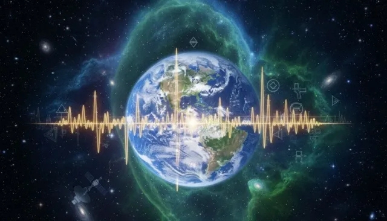

SETI (Search for Extraterrestrial Intelligence) engloba diversas iniciativas científicas cuyo objetivo es encontrar evidencia de vida inteligente en el universo, escaneando el cielo en busca de biofirmas tecnológicas o señales artificiales electromagnéticas que no puedan explicarse por fenómenos astrofísicos conocidos.
| Categoría / Pregunta | Información y Análisis Detallado |
|---|---|
| ¿Qué pasó? | Los científicos han detectado señales de radio interesantes que necesitan más investigación. |
| ¿Qué se piensa? | Podrían tener causas naturales, deberse a interferencias o merecer estudios adicionales. No se ha confirmado que sean mensajes extraterrestres. |
| Frecuencia y Ancho de Banda | Muchas de estas señales anómalas se buscan en la línea de hidrógeno neutro (aprox. 1420 MHz), considerada por los astrofísicos como el "canal de riego" o frecuencia universal óptima para comunicaciones interestelares debido a su bajo ruido de fondo cósmico. |
| Orígenes Terrestres (RFI) | Gran parte de las detecciones iniciales que parecen misteriosas terminan siendo clasificadas como RFI (Radio Frequency Interference), causadas por satélites de órbita baja (LEO), radares militares, teléfonos satelitales o emisiones terrestres rebotadas en la ionosfera. |
| Causas Astrofísicas Naturales | Se estudian fuentes naturales transitorias como púlsares (estrellas de neutrones altamente magnetizadas), destellos de radio rápidos (FRBs - Fast Radio Bursts), erupciones en magnetares o eyecciones de masa coronal estelar que imitan patrones artificiales. |
| Metodología SETI Actual | Los proyectos modernos utilizan supercomputadoras para analizar millones de canales angostos simultáneamente (filtrado digital masivo) y emplean algoritmos de Inteligencia Artificial para descartar falsos positivos generados por tecnología humana antes de emitir una alerta pública. |
Para que una señal candidata pase a ser considerada una verdadera anomalía de interés astrobiológico, debe cumplir con estrictos protocolos: repetirse desde la misma coordenada celeste, no mostrar modulación terrestre directa, persistir tras apagar equipos locales y ser verificada de manera independiente por al menos un segundo radiotelescopio geográficamente distante.